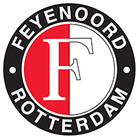

Feitjes
- Feijenoord 1
- De Kuip
- Euromast
- Watertaxi
- Katendrecht
Liedjes
Een lied over Feijenoord

Hand in hand kameraden
Hand in hand voor Feijenoord 1
Geen woorden, maar daden
Leve Feijenoord 1
Hand in hand kameraden
Hand in hand voor Feijenoord 1
Geen woorden, maar daden
Leve Feijenoord 1
Een lied over Rotterdam
Mijn Rotterdam, fijne stad aan de maas,
waar eens mijn wieg heeft gestaan.
Al word ik honderd en rijk als een sjeik,
nooit ga ik bij jou vandaan.
Waar vind je zo’n mooie haven,
duizenden schepen die komen en gaan.
Waar staat m’n hart voor in vuur en in vlam,
dat is voor jou Rotterdam.